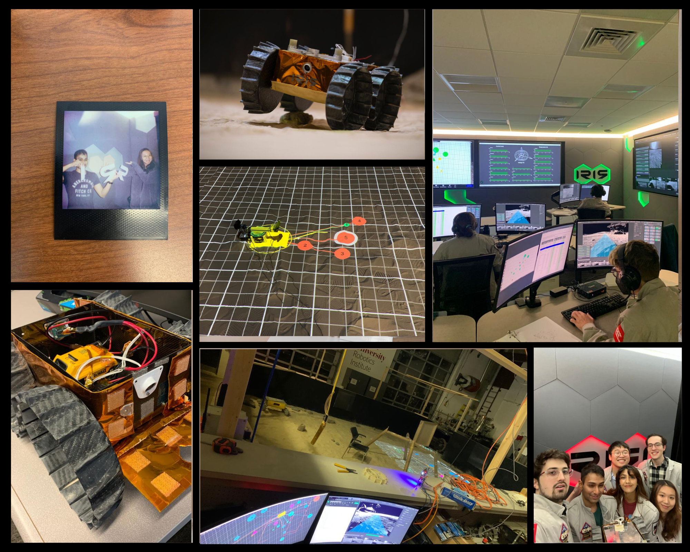

I'm the Navigation and Moonyard Ops Lead at Project IRIS, soon to be the history’s first-ever nano-scale rover to traverse the moon this May/June. I develop navigation strategies and protocols to determine our rover's next movements. My team and I also create toolkits and equipment to replicate IRIS's immediate lunar terrain on Earth to simulate movements before sending them.
Find out more